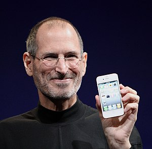

Цікаві факти
- Стів водив автомобіль (Mercedes SL55 AMG) без номерних знаків і паркувався на місцях для інвалідів (утім після перенесеної 2009 року операції з пересадки печінки він став мати на це право). Ходили чутки, що Стів використовував штрих-код замість знаків.
- Останні роки життя на публічних заходах зазвичай вдягався однаково — чорна водолазка, джинси Levi's (модель 501) і кросівки New Balance (моделі 991 і 992).
- ічна зарплата Джобса після повернення в Apple становила 1 долар США
- В день його смерті багато сайтів IT-спільноти трохи змінили свій дизайн — додавали посилання на його біографію, вставляли в інтерфейс його цитати.
- На початку серпня 2011 року в іноземній пресі викликала велике обурення викрадена Раїсою Богатирьовою промова Стіва Джобса. 28 червня 2011 р., під час виступу перед випускниками Києво-Могилянській академії чиновниця використала цілі шматки з промови Джобса перед випускниками Стенфорду у 2005 році.
Стів Пол Джобс
англ. Steve Jobs

Джобс на Worldwide Developers Conference
Ім'я при народженні
Steve Paul Jobs (Стівен Пол Джобс)
Псевдо
Стів Джобс
Народився
24 лютого 1955 Сан-Франциско, Каліфорнія, США
Помер
5 жовтня 2011 (56 років) Пало-Альто, Санта-Клара, Каліфорнія, США (рак підшлункової
залози)
Поховання
Альта-Меса
Громадянство
 США
США
Місце проживання
Маунтін-В'ю
Діяльність
CEO, Apple Inc. (до 25 серпня 2011 р.), NeXT Computer, Pixar, The Walt Disney
Company
Alma mater
Рід-коледж (1974), Homestead High Schoold (1972) і De Anza College
Знання мов
англійська
Заклад
Apple, Pixar і NeXT Computer
Членство
Американська академія мистецтв і наук
Роки активності
з 1974
Magnum opus
Apple I, Apple II, Apple Lisa, NeXT Computer, iMac, iPod, iPhone, IPad, Mac OS X v10.0,
NeXTSTEP, iTunes і App Store
Посада
генеральний директор
Партія
Демократична партія США
Конфесія
Дзен-буддизм
Батько
John Abdulfattah Jandali
Мати
Joanne Carole Schieble
Родичі
Мона Сімпсон (біологічна сестра), Патрісіа Енн Джобс (прийомна сестра)
Брати, сестри
Mona Simpson
У шлюбі з
Лорен Павелл Джобс
Діти
Ліса Бреннан-Джобс, Reed Paul, Erin Sienna і Eve Jobs
Автограф
Нагороди
Національна медаль технологій та інновацій США (1985)
премія опікунської ради «Греммі» (2012)
Каліфорнійська зала слави (2007)
Національна зала слави винахідників США
Легенди Диснею (2013)
IMDb
ID 0423418
Сайт
apple.com/stevejobs